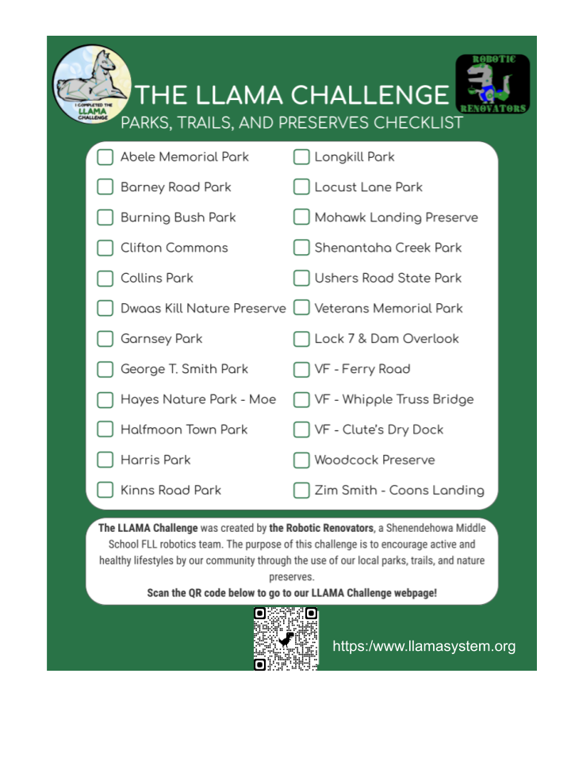

Join the LLAMA Challenge
Visit the local parks, trails, and nature preserves listed below.
Click the different places below to get directions to the flyers.
Scan the QR code posted at each location to log your visit.
Visit at least 20 out of 24 parks and get your very own LLAMA Challenge Patch!*
We hope you have fun discovering and exploring our community
through this challenge.
Leaderboard
|
Initials |
Locations Visited |
Date Completed |
| 1 |
NH |
6 |
4/21/21 |
| 3 |
NB |
3 |
4/18/21 |
| 3 |
PP |
1 |
4/11/21 |
| 4 |
JM |
1 |
4/11/21 |
| 4 |
JN |
1 |
4/11/21 |
| 6 |
MS |
1 |
4/11/21 |
| 7 |
LY |
1 |
4/11/21 |
- Abele Memorial Park (Halfmoon)^
- Barney Road Park (Clifton Park)
- Burning Bush Park (Ballston Lake)
- Clifton Commons (Clifton Park)
- Collins Park (Clifton Park)
- Dwaas Kill Nature Preserve (Clifton Park)
- Garnsey Park (Clifton Park)
- George T. Smith Park (Jonesville)
- Hayes Nature Park at Moe Road (Clifton Park)
- Halfmoon Town Park (Halfmoon)^
- Harris Park (Halfmoon)^
- Kinns Road Park (Clifton Park)
- Longkill Park (Ballston Lake)
- Locust Lane Park (Clifton Park)
- Mohawk Landing Nature Preserve
- Shenantaha Creek Park (Ballston Spa)
- Ushers Road State Park (Ballston Lake)
- Veterans Memorial Park (Jonesville)
- Lock 7 & Dam Overlook (Rexford)
- Vischer Ferry Preserve - Ferry Road (Clifton Park)
- Vischer Ferry Preserve - Whipple Truss Bridge (Clifton Park)
- Vischer Ferry Preserve - Clute’s Dry Dock (Clifton Park)
- Woodcock Preserve (Clifton Park)
- Zim Smith Trail - Coons Landing (Mechanicville)
The LLAMA Challenge was created by The Robotic Renovators, a Shenendehowa Middle School FLL robotics team. The purpose of this challenge is to encourage an active and healthy lifestyles by our community through use of our local parks, trails, and nature preserves. Send suggestions for future challenges to llamasystem@gmail.com
* The cost for the patch is $5 which covers shipping. Payment can be made via venmo. To request a patch and payment info, send your information including your email and mailing address to llamasystem@gmail.com.
^ Due to the fact that we cannot put flyers up at these parks, you can email us pictures of these parks to verify you have been there.

download checklist png file
Back to Main Page